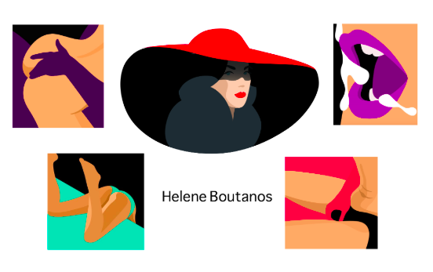
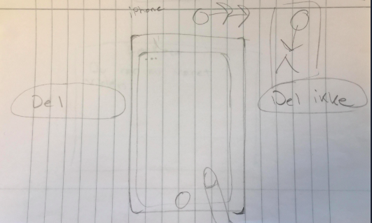
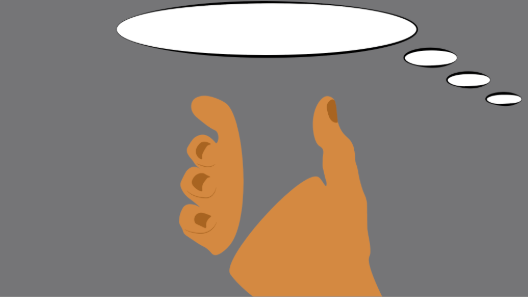
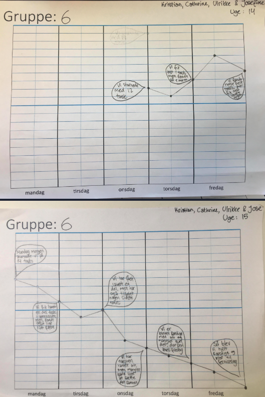

Faglige Mål
Kundecase
Vi havde en kundecase som vi sluttede dette tema af med, denne gang var Sex & Samfund der blev de udvalgte her privatsnak. Vi havde med den forrige opgave hele tiden bygget op til denne opgave. Opgaven gik ud på at vi skulle lave et spil for unge i alderen 13-15 år.Selve spillet skulle skabe opmærksomhed omkring emnet billeddeling, og hvilke konsekvenser der medfølger ved at dele upassende og ulovlige billeder på f.eks. de sociale medier.Det var vores opgave at finde ud af, hvordan man kunne formidle det budskab på en interessant og alligevel informativ måde.Vi blev hurtigt enige i min gruppe at vi ville lave et enkelt spil, hvor der ikke var for meget andet end budskabet, og at brugeren hellere skulle følge med.
Pich
Spillet går ud på at man skal hjælpe en pige, der står med hendes mobil i hånden, med hvad hun må dele og hvad hun ikke må dele. Der bliver stillet 6 spørgsmål, som fremgår som om at det er noget hun spørger sig selv om (i en tankeboble) og spilleren af spillet skal derefter trykke på del eller del ikke, som om at det var hende. Spilleren har tre liv. Hvis spilleren svare forkert 3 gange, taber personen spillet.
Design dokumentation
Moodboard Inspiration
Til vores billede- og animations stilart, valgte at tage udgangspunkt i flat design - med inspiration fra kunstneren Helene Boutanos. Hun benytter en meget sensuel stil, med mørke farver og dybe kontraster. Dette har vi valgt fordi vi gerne vil give en “dyster” stemning på billederne, så folk opfanger at det er forkert at dele nøgenbilleder. Vi valgte at designe vores spilskærme i naturtro stil, så de unge mennesker kunne opfange at det var forkert at dele billeder.
Produktions skitser
Udarbedjdelse af spilskærm
 Diagrammer
Aktivitetsdiagram

Statemachine diagram

Burn down charts
